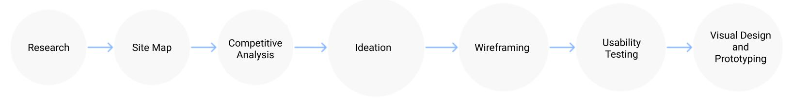
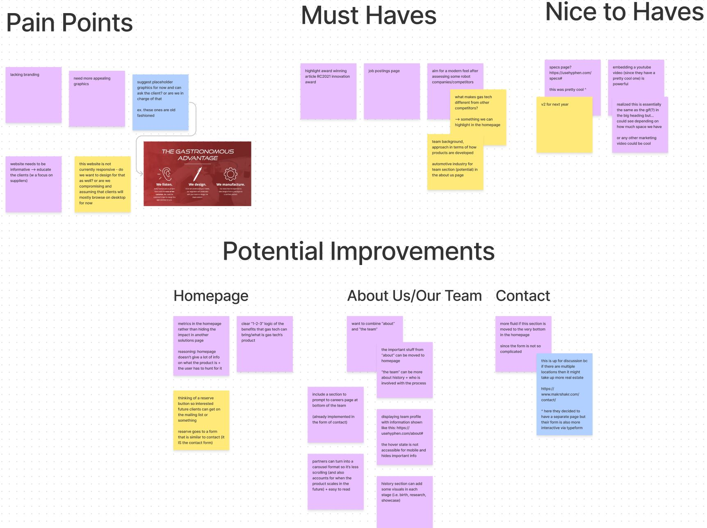
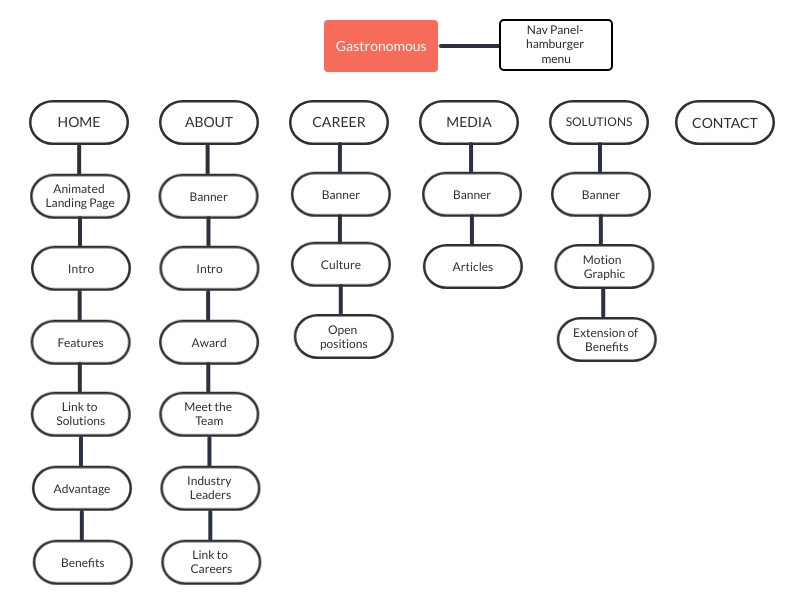
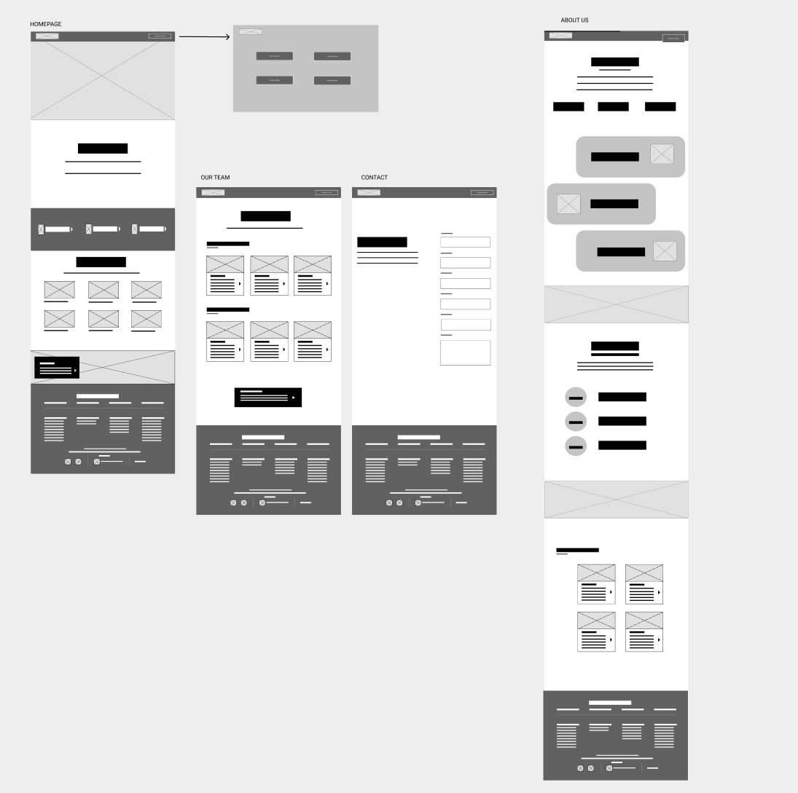
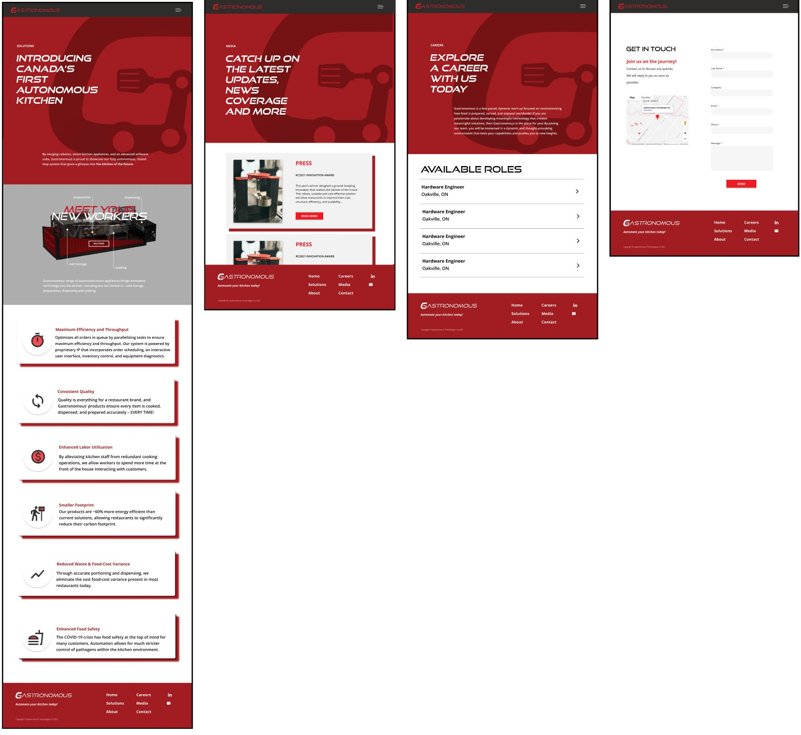
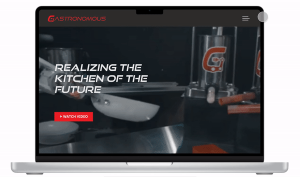

Gastronomous.
Gastronomous
Gastronomous is a startup that is looking to revolutionize the kitchen industry through automated kitchen appliances. Looking for a redesign of their website, they approached IDC (Innovative Design Co.), a pro-bono company that aids startups in design strategies. Being a designer with IDC, I worked with Gastronomous alongside my fellow designer to redesign their website!
Role
User Experience (UX) designer - wireframing and prototyping using Figma.
Process
Research, site map, competitive analysis, ideation, sketching, wireframing, usability testing, visual design and prototyping.
Design Question:
How might we improve elements like structure, content and visuals of previous website to better serve customers?
Our (Re)Design Process

1. Research
Being a new member of the Gastronomous team, I had no previous experience with the company and it's website. Thus, we started our research process
by identifying the pain points in the current website, and the areas where improvement could be made.

Based on our research of the current website, we narrowed down the following major pain points:
- Website lacks information and does a poor job of educating the user
- Old-fashioned design - a major contrast to the modern product the company is trying to sell!
- Lack of aesthetic apeal
- Cluttered information and graphics
- No careers page or media page - information on careers and articles scattered across other pages
2. Ideation
The brainstorming process involved studying a variety of websites for inspiration, including competitor websites, identifying the positive and negative attributes of each. We then crafted ideas about how to incorporate the positive attributes (good graphics, simple and concise content, etc.). After all those rounds of discussion, our proposed IA looked like this in the diagram below.

We made the following improvements to the IA:
- Every page included relevent redirections to pages that could provide the user with information that could be read in a flow. Redirectons would result in an increased conversion rate
- Hamburger menu to allow user to easily navigate to the page that they are looking for
- Customized banner for each page
- Homepage incorporated scrollable storytelling aspect to allow user to gain insight into the brand's identity.
3. Sketches
We started by sketching what we imagined each page to potentionally look like. According to our IA chart, we also organized what content would be displayed on the pages, and played around with the layouts. Through these low-fidelity wireframes we were able to decide the composition we wanted for the webpages. This aided in deciding the flow and user journey.

4. Wireframes and Design
We moved our ideas for each of the pages to Figma to explore possible design alternatives and come up with a high fidelity wireframe in terms of how the content would be displayed.
Home Page

The HomePage answers the following questions — What we are, who we are, what we do, how we can help you.
The user can gain all this information in just one page,
but it also compels visitors to dig deeper into the website and move down the funnel to learn more.
Key Highlights:
- Tried to have more impact with fewer words — Crisp visuals
- Easy scanning
- Clear, easy-to-find value proposition
- Consistent design for graphics and pictures
- Reinforced branding by using company colors
About Us

The About Us page dives deeper into the answer to the question touched upon in the homepage - Who are we?
Through the About Us page, we tried to develop some trust between the visitor and the company.
They get to peek behind the curtain and see if the company is one they’d like to do business with or even work for.
Key Highlights:
- Straightforward presentation of the facts and figures
- Inspire trust by providing useful information
- Sleek 'meet the team' section, with pop-up modal for each team member for more information
- Tried to give visitors 'a peek behind the curtain' by using pictures of company in action
- Link to innovation award article (tooting their own horn a little!) and careers page
Solutions | Media | Careers | Contact

Taking the company's branding into account,
we tried to have the components which were the foundational atoms of the rebranding for all the web pages.
We also created a specs animation for the solutions page to give users a 3-D view of the product and it's functions.

Key Highlights:
- Each page has it's purpose highlighted so the goal of the page is fulfilled with ease
- Animated specs graphic of automated kitchen pointing out functionality of each automated product
- Continued consistent design for graphics and pictures
- Gives users what they want by keeping these pages simple and clean
Navigation Menu

We decided to implement a hamburger menu, and a full screen navigation menu because they allow for experimentation
without jeopardizing a website’s functionality or confusing the user. And since they are accessed through a single
icon, there’s a lot of room for other page elements.
Key Highlights:
- Reflects website and contains necessary pages
- Consistent menu for all pages
- Red highlight and italic font when a page title is hovered over
Prototype - try it yourself!
What I've Learnt
I learned how to truly collaborate in a fast-paced environment, working with another designer, to project managers and devs - it really takes a village to build a successful product. I also learnt how to analyze what's working and what isnt by using analytics to see what visitors find valuable, and what they don’t. This project also taught me how to be flexible with accomodating client requests and conducting meetings.
What's Next?
I'd love to work on more design projects with IDC and maybe even take on more redesign assignments!
As for Gastronomous Tech, I wish them the best and hope to work with them again in the future on the design of the mobile version of their site.